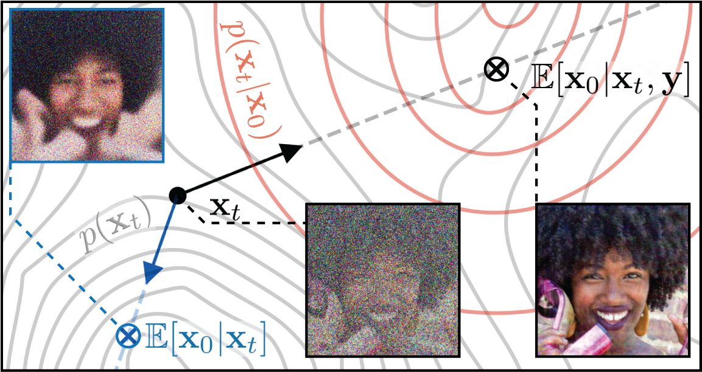
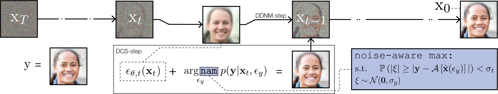
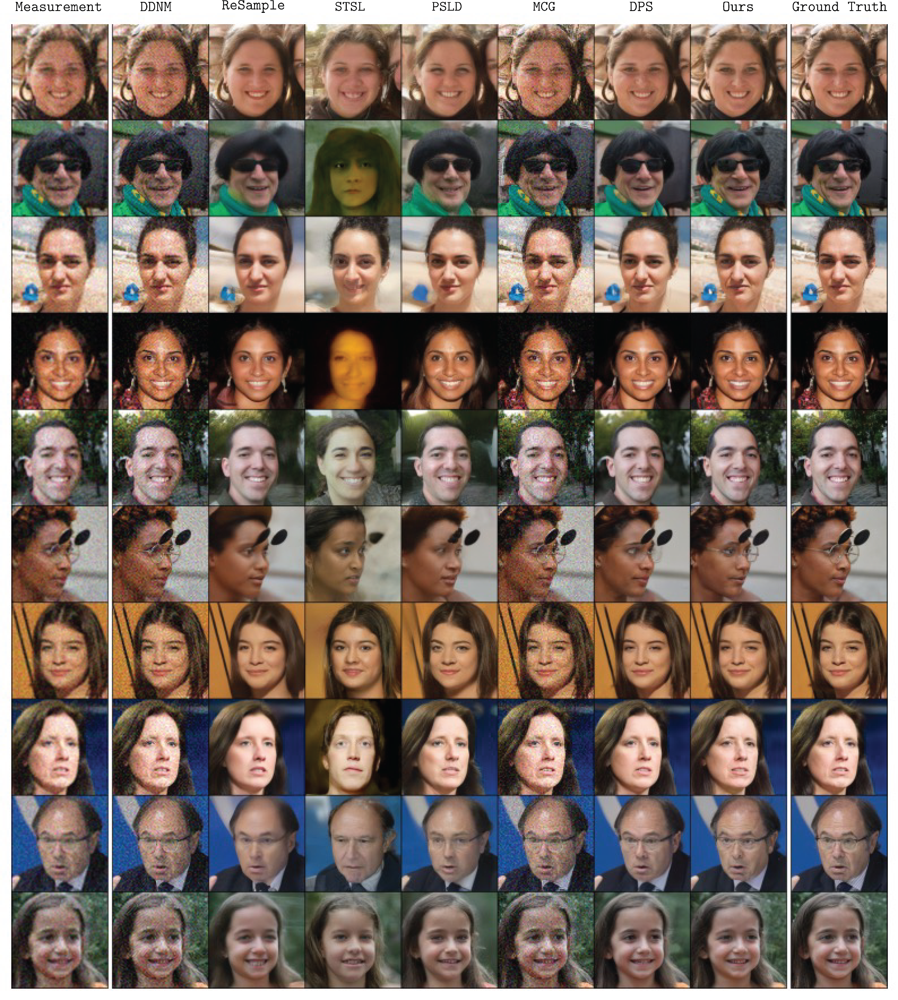
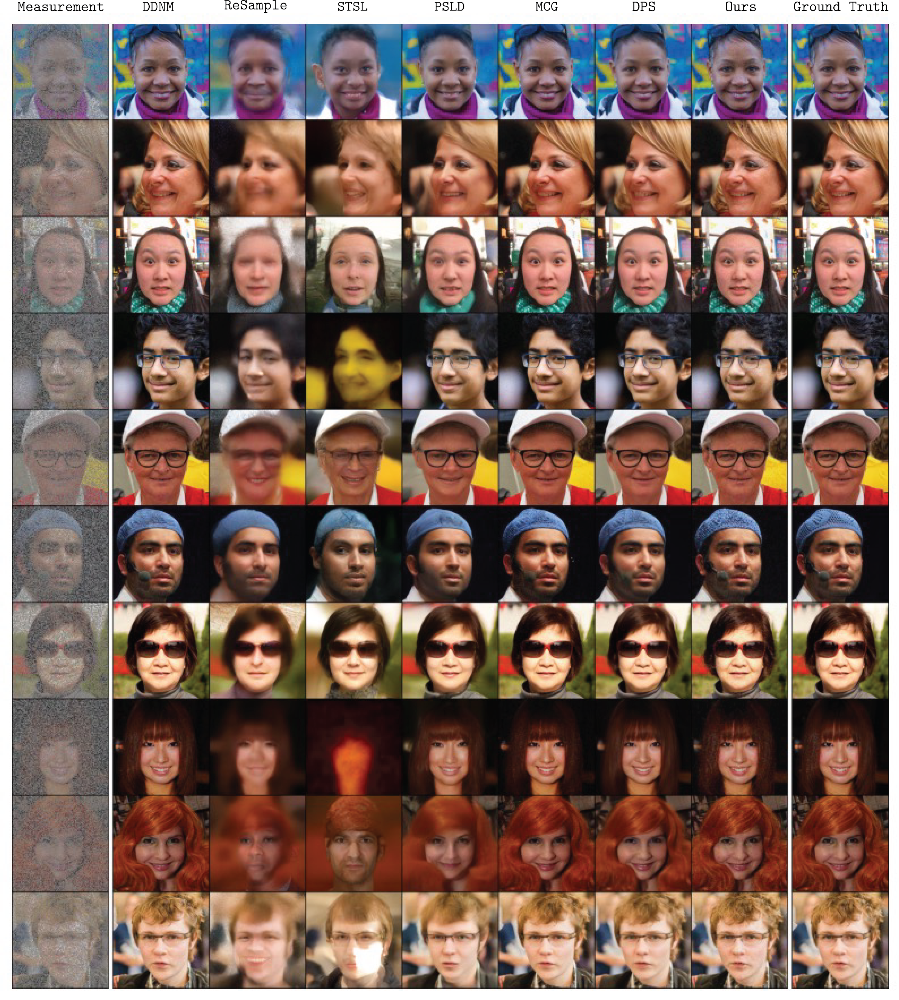
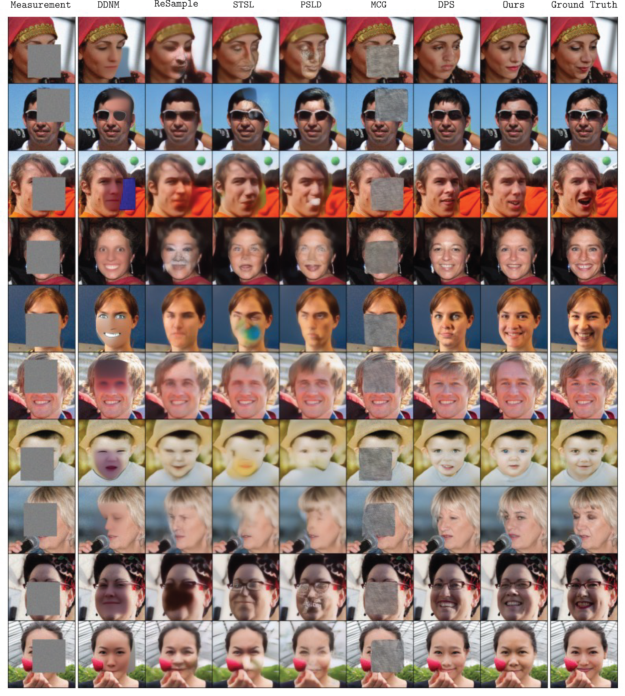
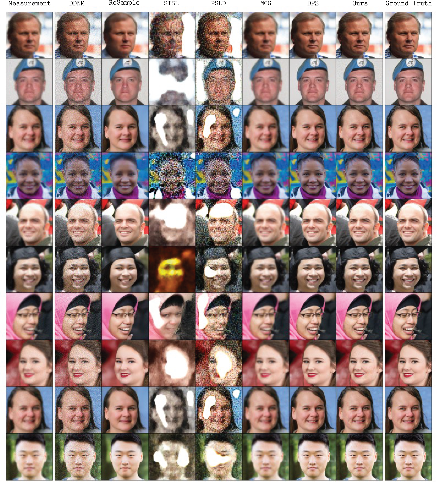
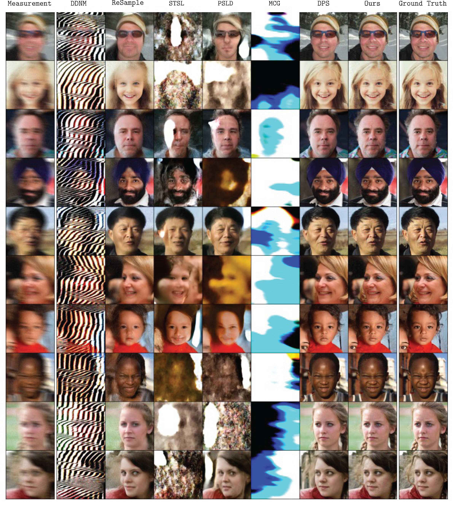

Diffusion models have been firmly established as principled zero-shot solvers for linear and nonlinear inverse problems, owing to their powerful image prior and iterative sampling algorithm. These approaches often rely on Tweedie's formula, which relates the diffusion variate $x_{t}$ to the posterior mean $\mathbb{E}[x_{0}|x_{t}]$, in order to guide the diffusion trajectory with an estimate of the final denoised sample $x_{0}$. However, this does not consider information from the measurement $y$, which must then be integrated downstream.
In this work, we propose to estimate the conditional posterior mean $\mathbb{E}[x_{0}|x_{t},y]$, which can be formulated as the solution to a lightweight, single-parameter maximum likelihood estimation problem. The resulting prediction can be integrated into any standard sampler, resulting in a fast and memory-efficient inverse solver. Our optimizer is amenable to a noise-aware likelihood-based stopping criteria that is robust to measurement noise in $y$. We demonstrate comparable or improved performance against a wide selection of contemporary inverse solvers across multiple datasets and tasks.
Current solvers struggle because estimating the posterior mean without the measurement context often leads to poor, noisy predictions. By instead calculating the conditional posterior mean $\mathbb{E}[x_{0}|x_{t},y]$, we ensure the diffusion trajectory stays consistent with the actual measurement throughout the reverse process.


DCS strikes a careful balance between preserving image quality and remaining robust to measurement noise, outperforming standard projection and posterior solvers across various noise levels ($\sigma_{y}$).

Super-Resolution

Random Inpainting

Box Inpainting

Gaussian Deblurring

Motion Deblurring
| Solver | Super-Resolution x4 | Random Inpainting | Box Inpainting | Gaussian Deblurring | Motion Deblurring | ||||||||||
|---|---|---|---|---|---|---|---|---|---|---|---|---|---|---|---|
| LPIPS $\downarrow$ | PSNR $\uparrow$ | FID $\downarrow$ | LPIPS $\downarrow$ | PSNR $\uparrow$ | FID $\downarrow$ | LPIPS $\downarrow$ | PSNR $\uparrow$ | FID $\downarrow$ | LPIPS $\downarrow$ | PSNR $\uparrow$ | FID $\downarrow$ | LPIPS $\downarrow$ | PSNR $\uparrow$ | FID $\downarrow$ | |
| DCS (Ours) | 0.137 | 30.14 | 19.45 | 0.024 | 34.84 | 21.19 | 0.088 | 25.11 | 19.25 | 0.103 | 28.69 | 22.62 | 0.087 | 29.48 | 26.67 |
| DPS | 0.163 | 29.54 | 25.91 | 0.113 | 29.72 | 33.21 | 0.105 | 23.52 | 24.41 | 0.129 | 26.85 | 26.48 | 0.159 | 29.84 | 24.41 |
| DDNM | 0.208 | 26.28 | 51.33 | 0.040 | 33.08 | 23.35 | 0.209 | 18.12 | 88.32 | 0.235 | 26.09 | 71.47 | 0.424 | 14.22 | 250.9 |
| RED-Diff | 0.090 | 29.81 | 25.03 | 0.035 | 33.72 | 17.80 | 0.090 | 25.20 | 19.98 | 0.191 | 29.72 | 19.98 | 0.191 | 29.14 | 16.90 |
| Solver | Super-Resolution x4 | Random Inpainting | Box Inpainting | Gaussian Deblurring | Motion Deblurring | ||||||||||
|---|---|---|---|---|---|---|---|---|---|---|---|---|---|---|---|
| LPIPS $\downarrow$ | PSNR $\uparrow$ | FID $\downarrow$ | LPIPS $\downarrow$ | PSNR $\uparrow$ | FID $\downarrow$ | LPIPS $\downarrow$ | PSNR $\uparrow$ | FID $\downarrow$ | LPIPS $\downarrow$ | PSNR $\uparrow$ | FID $\downarrow$ | LPIPS $\downarrow$ | PSNR $\uparrow$ | FID $\downarrow$ | |
| DCS (Ours) | 0.175 | 24.88 | 30.11 | 0.149 | 32.80 | 27.54 | 0.163 | 23.22 | 26.44 | 0.176 | 26.08 | 25.96 | 0.224 | 24.61 | 31.40 |
| DPS | 0.185 | 24.79 | 35.46 | 0.158 | 26.72 | 35.24 | 0.157 | 22.58 | 32.47 | 0.180 | 24.72 | 33.53 | 0.212 | 22.41 | 35.09 |
| DDNM | 0.623 | 21.49 | 145.9 | 0.179 | 24.96 | 39.18 | 0.334 | 19.20 | 72.11 | 1.220 | 10.73 | 176.8 | 0.739 | 5.10 | 524.0 |
| RED-Diff | 0.665 | 22.10 | 155.1 | 0.298 | 34.78 | 28.62 | 0.155 | 22.96 | 61.14 | 0.447 | 26.93 | 106.3 | 0.423 | 24.16 | 120.1 |
| Solver | Super-Resolution x4 | Random Inpainting | Box Inpainting | Gaussian Deblurring | Motion Deblurring | ||||||||||
|---|---|---|---|---|---|---|---|---|---|---|---|---|---|---|---|
| LPIPS $\downarrow$ | PSNR $\uparrow$ | FID $\downarrow$ | LPIPS $\downarrow$ | PSNR $\uparrow$ | FID $\downarrow$ | LPIPS $\downarrow$ | PSNR $\uparrow$ | FID $\downarrow$ | LPIPS $\downarrow$ | PSNR $\uparrow$ | FID $\downarrow$ | LPIPS $\downarrow$ | PSNR $\uparrow$ | FID $\downarrow$ | |
| DCS (Ours) | 0.238 | 23.45 | 39.41 | 0.142 | 26.06 | 34.46 | 0.230 | 20.63 | 37.11 | 0.253 | 24.22 | 38.96 | 0.203 | 24.62 | 38.63 |
| DPS | 0.309 | 23.99 | 49.81 | 0.266 | 25.05 | 38.87 | 0.301 | 18.76 | 34.85 | 0.493 | 19.14 | 61.59 | 0.460 | 18.65 | 53.21 |
| DDNM | 0.258 | 20.27 | 28.35 | 0.084 | 25.16 | 51.33 | 0.333 | 17.42 | 85.41 | 0.456 | 24.35 | 67.98 | 0.694 | 5.72 | 304.2 |
| RED-Diff | 0.090 | 28.17 | 57.06 | 0.239 | 25.07 | 16.71 | 0.386 | 19.99 | 54.38 | 0.459 | 24.70 | 68.71 | 0.376 | 23.66 | 23.66 |
| Solver | Super-Resolution x4 | Random Inpainting | Box Inpainting | Gaussian Deblurring | Motion Deblurring | ||||||||||
|---|---|---|---|---|---|---|---|---|---|---|---|---|---|---|---|
| LPIPS $\downarrow$ | PSNR $\uparrow$ | FID $\downarrow$ | LPIPS $\downarrow$ | PSNR $\uparrow$ | FID $\downarrow$ | LPIPS $\downarrow$ | PSNR $\uparrow$ | FID $\downarrow$ | LPIPS $\downarrow$ | PSNR $\uparrow$ | FID $\downarrow$ | LPIPS $\downarrow$ | PSNR $\uparrow$ | FID $\downarrow$ | |
| DCS (Ours) | 0.402 | 22.99 | 48.21 | 0.166 | 26.04 | 34.47 | 0.243 | 19.70 | 46.03 | 0.407 | 22.28 | 51.13 | 0.435 | 20.43 | 61.48 |
| DPS | 0.540 | 20.10 | 85.06 | 0.479 | 18.63 | 82.74 | 0.506 | 18.03 | 83.06 | 0.412 | 20.57 | 65.07 | 0.450 | 18.91 | 75.65 |
| DDNM | 0.751 | 20.98 | 169.3 | 0.400 | 25.63 | 35.72 | 0.751 | 18.06 | 110.8 | 1.221 | 9.60 | 202.7 | 0.783 | 5.01 | 350.1 |
| RED-Diff | 0.747 | 20.66 | 155.1 | 0.167 | 25.38 | 32.99 | 0.374 | 19.68 | 88.20 | 0.660 | 23.19 | 110.9 | 0.591 | 21.27 | 138.8 |
@misc{patsenker2025injecting,
title={Injecting Measurement Information Yields a Fast and Noise-Robust Diffusion-Based Inverse Problem Solver},
author={Jonathan Patsenker and Henry Li and Myeongseob Ko and Ruoxi Jia and Yuval Kluger},
year={2025},
eprint={2508.02964},
archivePrefix={arXiv},
primaryClass={cs.CV}
}